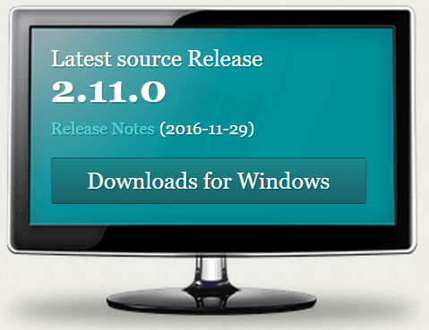

BETS TECH WORKSHOP
GIT & WEB APP
Created by Mark Hsu
What is GIT?
WIKI says:
Git is a version control system (VCS) for tracking changes in computer files and coordinating work on those files among multiple people. It is primarily used for software development,[7] but it can be used to keep track of changes in any files. As a distributed revision control system it is aimed at speed,[8] data integrity,[9] and support for distributed, non-linear workflows.
What is version control system?
You fight

Then you die

Then you start from the last checkpoint

You are doing VERSION CONTROL!!
Witcher 3 (18+)

It has 16 endings!!

40 hrs x 16 = 640 hrs
= 26.7 days

Linux in 1991

Linux in 2017

Version Timeline

Summary
Git is a tool to manage and contorl the versions of your progress files in a game folder
DEMO
Exercise #1
Install Git, create a repo, making some changes
Exercise #1 - challenge
Git Commands
to control changes:
- git init
- git add
- git commit
to see where you are:
- git status
- git log
Exercise #2
Work on multiple branches

Exercise #2 - challenge
Git Commands
to control branches:
- git checkout -b
- git checkout
to see where you are:
- git branch -av
- git diff
Exercise #3
Solve conflict

Exercise #3 - challenge
Git Commands
- git merge
Team Collaboration

Project hosting

Remote repository


DEMO
Exercise #4
Create Github repository, push changes to a github

Exercise #4 - challenge
Git Commands
to commit changes:
- git remote
- git push
Exercise #5
Fetch changes from Github
Exercise #5 - challenge
Git Commands
to pull changes:
- git clone
- git fetch
- git pull
large team collaboration

Demo
Exercise #6
Submit Pull-Request in Github
Frontend vs Backend

Frontend vs Backend

Frontend vs Backend

Frontend vs Backend
Frontend vs Backend
Frontend vs Backend
In Restaurant, waitress sends orders to chef, and receives dishes from chef though kitchen's window, then takes back to the customer
In Web, frontend sends requests to backend, and receives responses from backend though RESTful API, then renders to the user